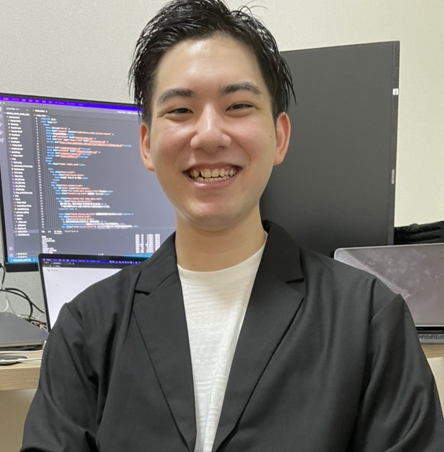

SES企業に所属しているエンジニアの方はご自身の給料がどのように算出されているかご存知ですか？
私は、SES企業に所属しておりましたが、
その企業では、現場単価のXX%が給料になる計算方法でした。
つまり、高単価になるほどエンジニアはメリットが少なくなっていきます。
SES業界ではこのように割合で給料計算を行う会社が多い傾向にあります。
そのため、SESエンジニアの平均年収が低いという状況を生んでいました。
※某企業による調査結果によると、ITエンジニアの年収の平均が400〜500万円くらいとの事です。
努力して得た自分のスキルの価値が上がるほど、給料としての還元率が低くなってしまうこの状況に疑問を持ったため、エンジニアファーストな企業を作りたいと考え、Reigle株式会社を設立しました。
私の考えるエンジニアファーストとは
弊社では、会社の利益を最小限にすることで、エンジニアの利益を最大限にしています。
弊社の給料計算方法は、現場単価から20万円（固定）と会社折半分の各種税金の金額を引いたものが、その社員の総支給になります。
つまり、単価が上がるほど、給料が増えていくという仕組みになります。
この20万円は、社員を会社に所属させるために必要な費用（給料計算、年末調整、メール、チャットツール、求人費用、営業費用など）と、会社の利益（2万円+必要経費の端数）です。
SESを経験されている方で、ご自分の現場単価がわかる場合は、
弊社の給料計算ツールでどのくらいの給料になるかシミュレーションしてみてください。
税率などで多少誤差は出ると思いますが、おおよそこの金額になります。
給料計算シミュレーション
弊社に興味を持って頂けた方は以下より、ぜひご連絡ください。
SES経験者・エンジニア経験者の方の転職も歓迎です。
以下のお問合せよりご連絡をお待ちしております。
お問合せ